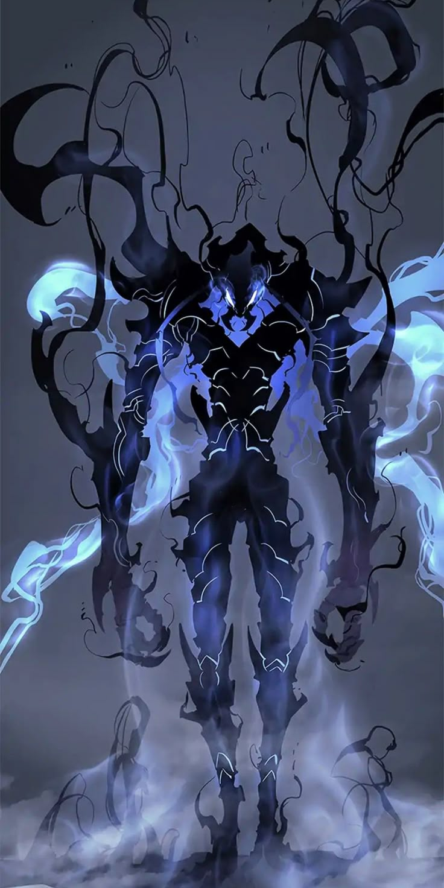
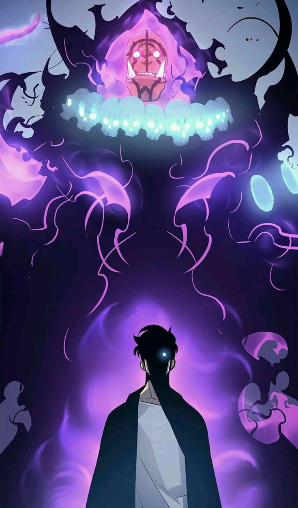

The Shadow Monarch
Sung Jin-Woo, once the weakest hunter, faced a life-threatening ordeal in a hidden dungeon that changed him forever. He became the "Player," a being with the unique ability to "level up" and grow infinitely stronger. As he navigates a world filled with monsters and powerful hunters, his journey is one of immense power, profound sacrifices, and the rise of a new king.
His most formidable ability is Necromancy, allowing him to extract the shadows of defeated foes and command them as his loyal army. This is the tale of his evolution from a mere human to the formidable Shadow Monarch.
The Shadow Army

Beru

Igris

Iron

Tank
